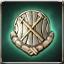

Castilla, Mine Explorer
Medal
Castilla, Mine is the place where advanced pioneers mined for gold. Now the mine is closed, due to mysterious monsters.
Attributes
Rating: 1
Medal
Castilla, Mine is the place where advanced pioneers mined for gold. Now the mine is closed, due to mysterious monsters.

Medal
Relic which was discovered in Castilla, Ruins gives many mysteries.

Medal
There are traces of an ancient civilization in Castilla, Relic, hinted by the severely worn-out ruins that have since blended seamlessly with the surroundings.

Medal
The ancient Temples of the Castilla civilization remain standing today.

Medal
When you explore the huge Tower of Chaos, discovered in Castilla, you may find the truth.